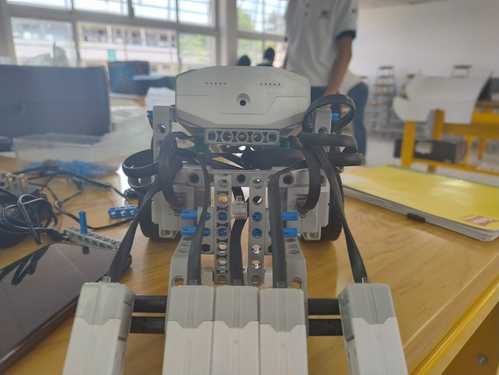
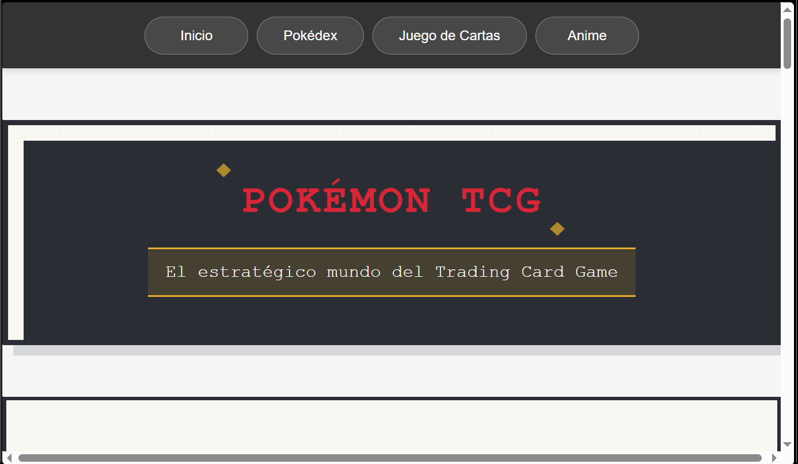
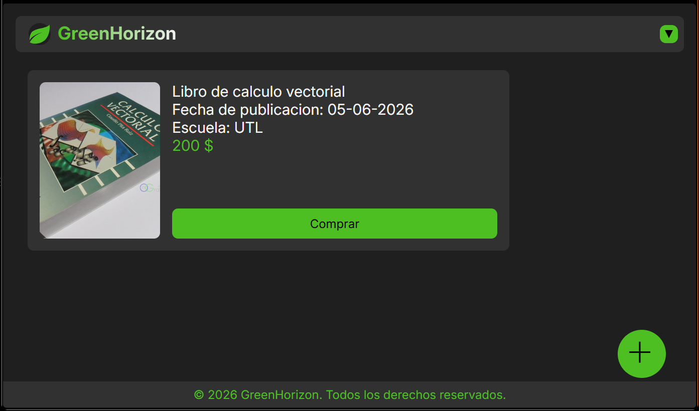

Mi nombre es Jesús Gamaliel Escareño Carpio, tengo 19 años, me gustan los videojuegos, escuchar música y dormir. Estoy estudiando en esta universidad porque desde finales de secundaria me dí cuenta que tenía interés en esto, así que decidí estudiar la carrera de informática en el Conalep, y me siguió llamando la atención hasta el punto de querer seguir aprendiendo e ingresar a esta universidad.
N/A
A partir de tercer cuatrimestre mientras estudiaba en el Conalep, nuestro profesor de programación nos ofreció participar en dicho taller para aprender y más adelante poder participar en una competencia. Accedí gracias a que un amigo estaba emocionado con la idea, participamos en dos ocasiones y con ello aprendí un poco sobre los robots de Abilix.

Al cursar quinto semestre en la preparatoria, tenía una clase sobre páginas web, aprendí varias cosas. Como proyecto final, en equipo de 4 integrantes, tuvimos que realizar una página de temática libre como proyecto final.

En el anterior cuatrimastre cursamos la materia de proyecto integrador, donde tuvimos que hacer uso de todo lo que habíamos aprendido en las demás materias, todo se realizó en un equipo de 6 integrantes. Nuestra idea consistía en hacer una plataforma de una tienda en línea para los estudiantes, así procurando su seguridad, apoyando su economía y promoviendo el reciclaje.

4775426098
jesusgamaliel07@gmail.com
25001396@alumnos.utleon.edu.mx